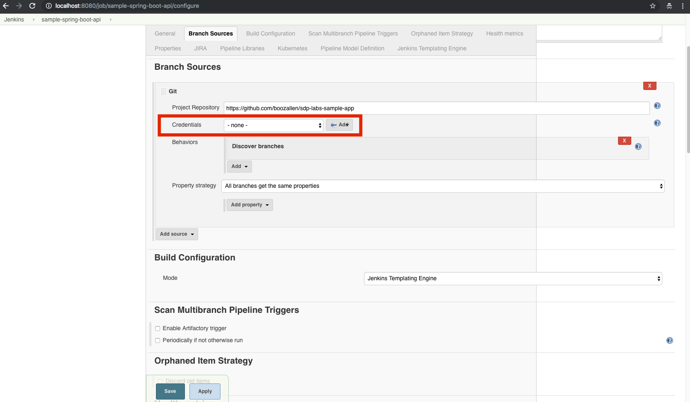

Create Jenkins Credentials for GitHub¶
On this page, you will be creating some Jenkins credentials for your Jenkins instance to be able to connect to GitHub much faster than if you otherwise didn’t do so.
The things you do on this page are optional as the GitHub repositories that we are using throughout this lab are all public, however, we definitely recommend doing it so that the time it takes to build the sample application in Jenkins on the next page is much faster.
Create a GitHub Personal Access Token¶
To begin, you will need to create a GitHub Personal Acccess Token by following the guide here.
The token should have all permissions given to it except for the permission to delete the repository.
Note
Don’t forget to save this token in some place where you can easily access it in case you need it in the future, otherwise, you may need to create a new one if you lose it.
Adding a Credential to Jenkins¶
You will now be adding your personal GitHub credentials to your Jenkins instance as a Jenkins credential.
Navigate to the configuration page for the Jenkins job that we already created for you: http://localhost:8080/job/sample-spring-boot-api/configure
On the top of the page, click the Branch Sources tab and click the button labeled Add with a blue key next to it on the row labeled Credentials.
In the dropdown that follows, select Jenkins.
In the popup that appears, do the following:
- Leave the Domain field untouched so that the value is
Global credentials (unrestricted)- Leave the Kind field untouched so that the value is
Username with Password- For the Username field, enter the username of your GitHub account
- For the Password field, enter the value of your Personal Access Token you created in the last step
- For the ID and the Description fields, enter
github- Click the Add button when you’re done entering the above information
Now that you created the Jenkins credential to store your Github information, you can now use it. To do so, click the Credentials dropdown
and select the github credential.
On the top of the page, click the Jenkins Templating Engine tab.
Click the Credentials dropdown and select the github credential within the Source Location and the Library Sources sections
as shown in the areas highlighted in red in the following screenshot.
When you’re done with everything, click on the Save button on the bottom of the page.
Finally, you will be running the Jenkins build on the next page and seeing the fruits of your labor. Let’s continue!